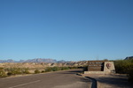
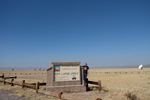

|
Great Sand Dunes National Park On our way to visit Crestone, we stopped over at the sand dunes to sleep and enjoy the sunrise. |
| < Back | Photos |
|  |
On our way across Texas, we took a short (for Texas; it was still 6 hours off-route!) detour to camp and hike at Big Bend, right where the U.S. meets Mexico at the Santa Elena canyon. |
|  |
On our drive from El Paso to Colorado, we decided to take a detour to the west to check out the National Radio Astronomical Observatory's Very Large Array installation. It is a tri-radial span of huge satellite dishes that spans up to 13 miles across in the high desert valley, with a network of rails that reconfigure their spacing to change the telescope's resolution, or move dishes to the maintenance bay. It is also home to the Bracewell Radio Sundial, the first and only of it's kind. Overall a totally worthwhile extra couple hours of driving to see such impressive engineering feats, and be reminded of all those that came before it. |
|
|
Great Sand Dunes National Park On our way to visit Crestone, we stopped over at the sand dunes to sleep and enjoy the sunrise. |